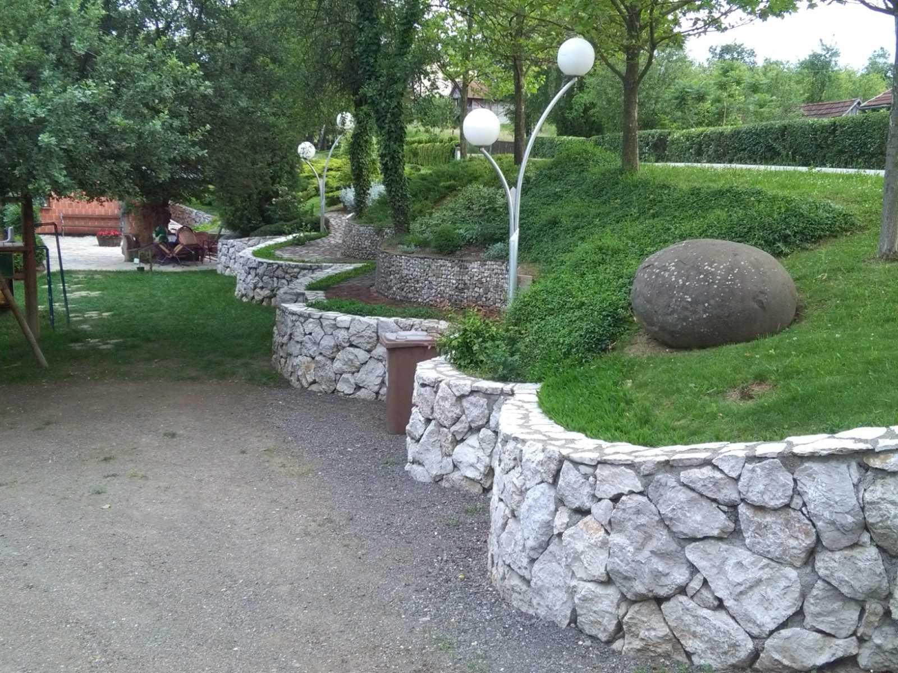
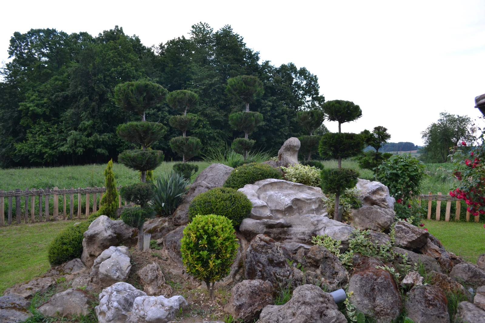
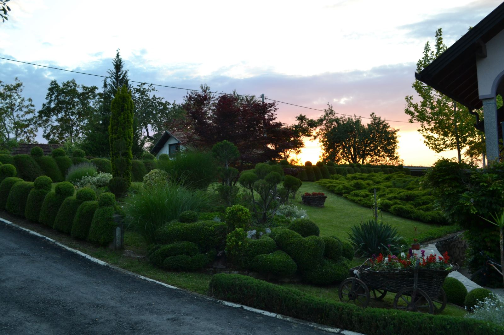
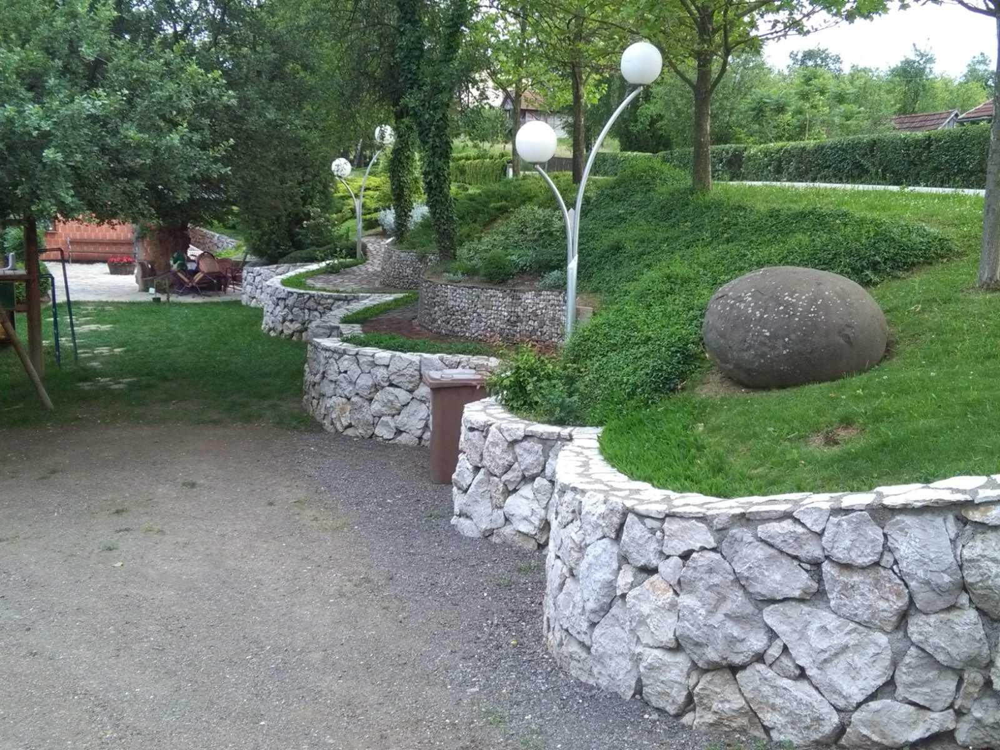
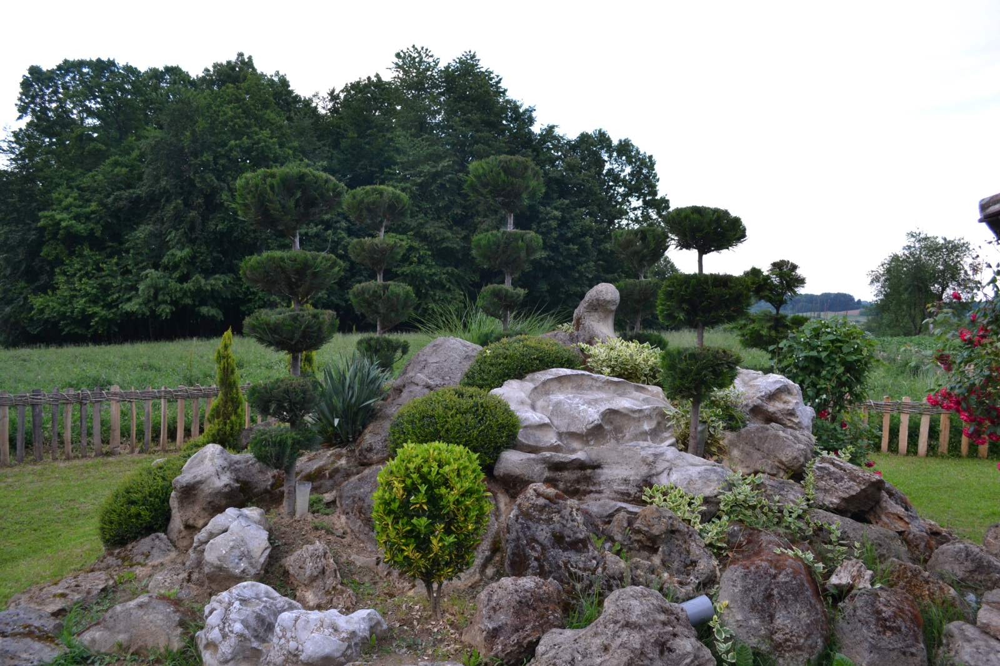
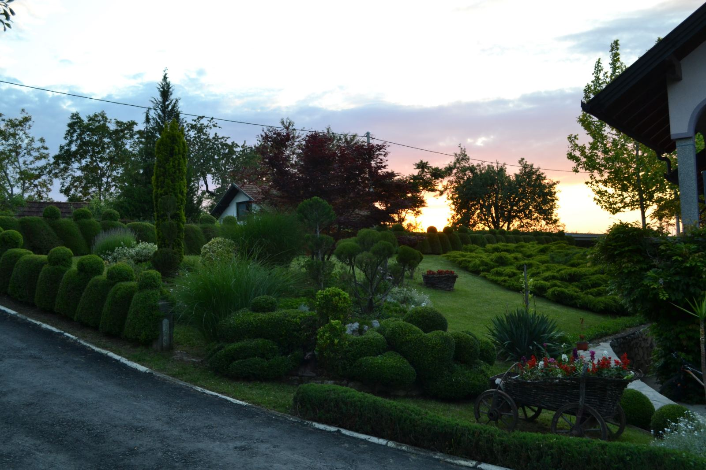

Gusak je selo u opštini Prnjavor. Nalazi se na 200-270 m.n.v. Površina je 4,70 km², udaljeno je 15 km od opštinskog centra. Pripada mjesnoj zajednici Gusak-gajevi. Razbijenog je tipa, a zaseoci su Gornji i Donji Gusak. Smješteno je na brežuljkastom terenu, prekrivenom oranicama i bjelogoričnom šumom. U ataru postoje potoci Vasiljevac, Jelinac i Ugljarica, te izvori Bogdanovac i Dobra Voda. Prema popisu iz 2013. godine selo ima 59 domaćinstava i 179 stanovnika. Mještani se uglavnom bave poljoprivredom. Najbliža crkva je u Potočanima.
U defteru iz 1604. godine u Nahiji Kobaš pominje se napusteno selo Gusak. Selo je 1879.godine imalo 18 domaćinstava i 145 stanovnika (pravoslavci). 1895. godine imalo je 167 stanovnika. Prema popisu iz 1971. godine 217 stanovnika. U Drugom svjetskom ratu poginuo je jedan borac NOBJ i četiri civila. Tokom rata 1992-1995. iz mjesne zajednice Gusak-Gajevi poginulo je šest boraca VRS, kojima je podignuto spomen-obilježje u centru sela.